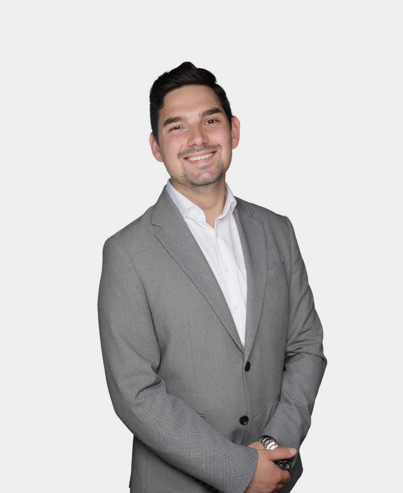

“
Unsere Mission ist es, traumhaften Wohnraum in NRW zu schaffen. Wir verwandeln sanierungsbedürftige Immobilien in Traumzuhause — mit Qualität und Leidenschaft.
Unternehmen
A&A Assets GmbH
Standort
Leverkusen, NRW
Fokus
Immobilienankauf & Sanierung